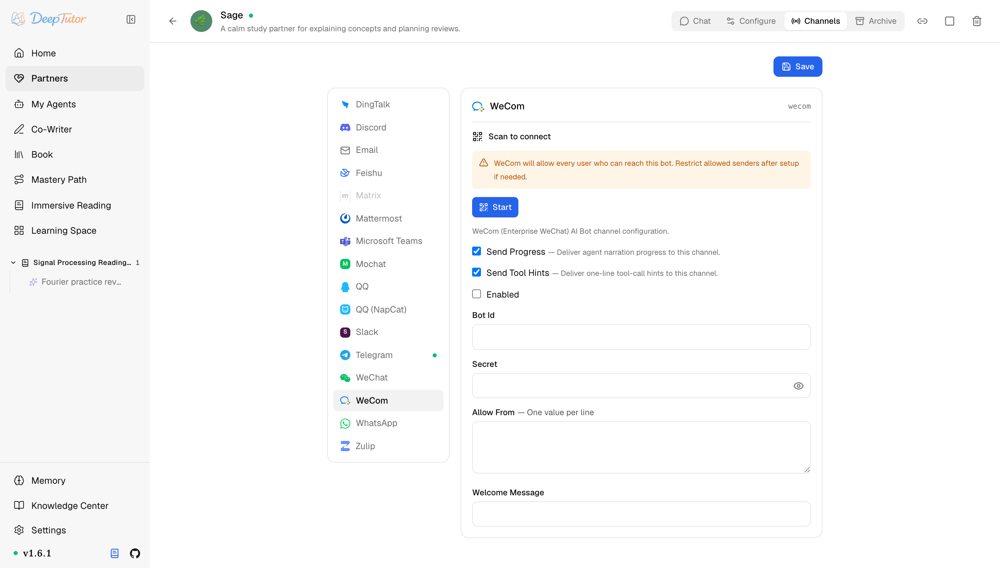

夥伴與管道企業微信
DeepTutor 接入企業微信教學！掃描 QR Code 4 步自動綁定憑證，AI Bot 長連線直連，辦公群秒變 AI 值班員！｜零度解說
為 Partner 設定企業微信 / WeChat Work AI Bot 管道。
原文連結：https://docs.deeptutor.info/zh-cn/partners/wecom/
公司用企業微信辦公的朋友看過來，這期是給你們準備的。
DeepTutor 的 wecom 管道，專門對接企業微信 / WeChat Work：它透過企業微信 AI Bot 的 WebSocket 長連線接入，把學習夥伴（Partner）直接請進辦公場景。
注意它和個人 WeChat (weixin) 不同：普通個人微信看微信那篇，企業微信 / WeChat Work 看本篇。
最舒服的地方在於，WeCom 管道卡片可以掃描 QR Code 引導流程（onboarding）：掃一次碼，憑證自動寫入，4 步完成綁定。卡片同時負責設定與執行反饋，以 Connected 為主要檢查；日誌只用來補充協定細節。
但是問題來了。企業微信這邊有兩個門檻：你得有組織管理員權限，還得裝上專用的 wecom-aibot-sdk。
接下來，我們從前置條件開始，把掃描 QR Code 和手動兩種設定方式都走一遍。

一、前置條件
- 有企業微信組織管理員權限。
- 安裝
wecom-aibot-sdk。可以透過 Partners 可選元件（extras）安裝，必要時也可單獨安裝。
pip install -e ".[partners]"
python -c "import wecom_aibot_sdk; print('ok')"二、快速設定：掃描 QR Code 連線
WeCom 管道卡片可以透過掃描 QR Code 引導流程獲取並儲存 bot 憑據：
- 開啟 Partners -> 你的 partner -> Channels -> WeCom ，點選 Scan to connect 。
- 用有權限的企業微信帳號掃描 QR Code，也可以開啟 QR Code 旁邊的授權連結。
- 等狀態變成 Scan completed ，再點選 Apply 。DeepTutor 會寫入回傳的 Bot ID 與 Secret、啟用管道；Partner 已在執行時還會重新載入（reload）管道。
- 掃描 QR Code 流程會保留已有的 Allow From ；如果原來沒有列表，就會使用
*。如果這個 bot 可能被非預期使用者訪問，請立即收緊白名單（allowlist）。
如果組織不適合走掃描 QR Code 引導流程，請使用下面的 Bot ID / Secret 手動流程。
三、手動設定：在企業微信建立 AI Bot
- 登入 https://work.weixin.qq.com/ 。
- 開啟 應用管理 / 小程式 -> AI Bot 平台 。
- 建立 AI Bot 應用。
- 設定名稱、描述、可見部門/使用者和審批設定。
- 複製 Bot ID 和 Secret 。
四、設定 DeepTutor
開啟 Partners -> 你的 partner -> Channels -> WeCom，填寫：
| 欄位 | 說明 |
|---|---|
| enabled | partner 啟動時是否啟動該管道。 |
| bot_id | 企業微信 AI Bot 平台裡的 Bot ID。 |
| secret | 企業微信 Secret，按憑證處理。 |
| allow_from | 允許訪問的使用者 id。空列表拒絕訪問；基礎管道策略支援時， * 表示開放。 |
| welcome_message | 使用者開啟會話時傳送的可選歡迎語。 |
| send_progress / send_tool_hints | 是否投遞過程解說（narration）和一行工具呼叫提示。 |
五、訪問控制和可見範圍
WeCom 有兩層訪問控制：
- 企業微信應用可見範圍決定組織內誰能開啟這個 AI Bot。
- DeepTutor 的
allow_from決定哪些 sender ids 可以進入 Partner 執行環境。
首次設定時，建議把企業微信可見範圍設小；從日誌確認 sender ids 後，再顯式填寫 allow_from。
六、啟動和測試
deeptutor partner start <partner-id>伺服器端日誌應顯示 WeCom WebSocket connected/authenticated。然後在企業微信裡開啟 AI Bot，傳送一條短訊息測試。
配好之後掛在伺服器上，辦公室同事隨問隨答，真能跑。
常見問題
ImportError: wecom_aibot_sdk—— 在執行 DeepTutor 的同一個環境裡安裝wecom-aibot-sdk或 Partners extra。- 連線成功但不回覆 —— 檢查
allow_from、部門可見範圍，以及傳送者是否有權限使用該 AI Bot。 - 斷線 —— 短暫斷線會自動重連；持續離線時檢查 Bot ID / Secret 和伺服器到企業微信的出站網路。
實際效果還會受到模型、提示詞以及具體使用場景的影響，建議大家結合自己的需求實際體驗評估。